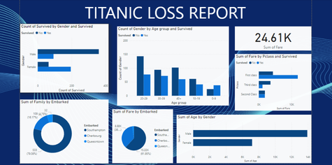
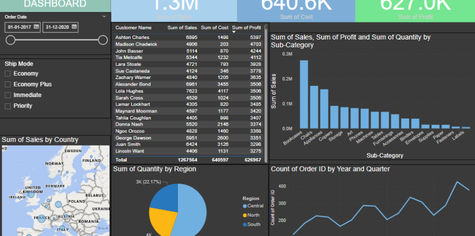
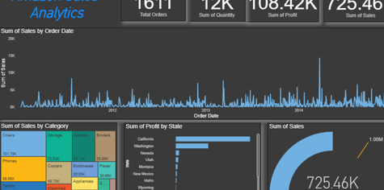
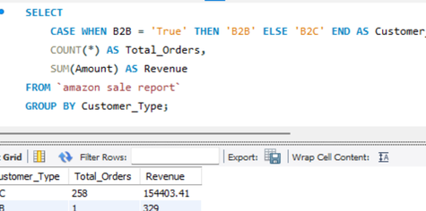
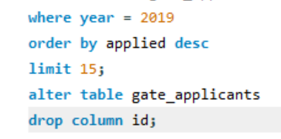
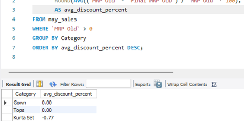
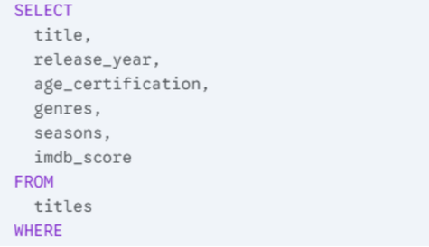
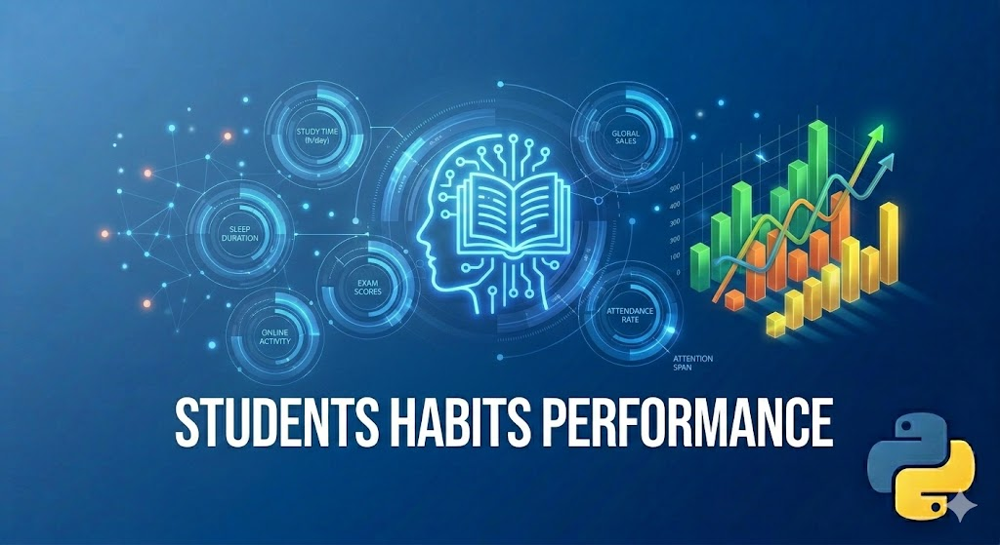

Data Projects
Dashboards, SQL analysis, and Python-driven insights.
Power BI

HR Analytics Dashboard for Attrition
↗Multi-page Power BI dashboard analyzing employee attrition across departments, age groups, and job roles with dynamic filtering and KPIs for attrition rate and average age.

Titanic Loss Report
↗Dashboard analyzing Titanic passenger survival data across gender, age groups, class, and embarkation port — with fare distribution and family size breakdowns.

SN Corp Sales Dashboard
↗Business dashboard tracking $1.3M in sales, cost, and profit with customer-level breakdowns, regional quantity analysis, geographic map, and quarterly order trends.

Amazon Sales Analytics
↗E-commerce sales dashboard with time series trends, category-level treemap, state-wise profit analysis, and KPIs for total orders, quantity, and revenue across 3 years.
SQL

International Sales Report
↗Advanced SQL analysis on global apparel sales — customer segmentation with CASE, SKU revenue contribution via subqueries, top product rankings, and order value efficiency metrics.

Amazon Sales Report
↗SQL-based analysis of Amazon sales data covering revenue trends, top-performing products, and regional sales breakdowns using aggregations and joins.

GATE Applicants Analysis
↗SQL analysis on GATE exam applicant data — exploring enrollment trends, discipline-wise participation, and year-on-year changes across engineering streams.

May Sales Report
↗Focused SQL report on May sales performance — analyzing daily revenue, top products, and customer purchase patterns using filtering and grouping queries.

Best Netflix Content Report
↗SQL analysis on Netflix content data — identifying top-rated shows and movies by genre, country, and release year using ranking functions and conditional queries.
Python
Facebook Data Analysis
↗Exploratory data analysis on Facebook user data — cleaning, transforming, and visualizing engagement patterns and user behavior using Python and Pandas.
Netflix Dataset Analysis
↗Data cleaning and analysis on Netflix content — handling missing values, standardizing formats, and uncovering trends in genres, ratings, and release patterns.
Amazon Sales Report
↗Python-based analysis of Amazon sales data — cleaning raw records, analyzing revenue trends, and identifying top-performing products and regions.

Student Habits & Performance
↗Analysis of student lifestyle habits and their impact on academic performance — exploring correlations between study hours, sleep, and exam scores.